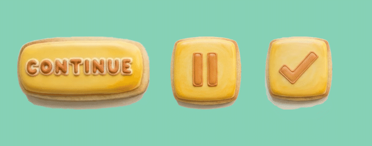
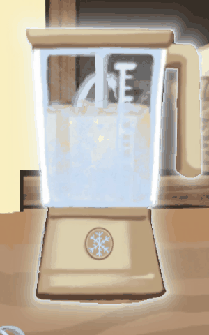
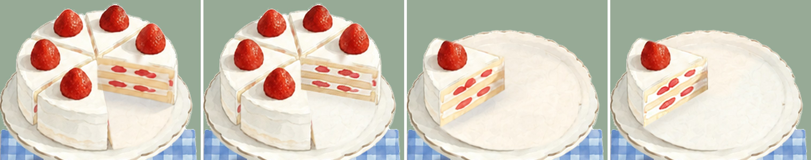
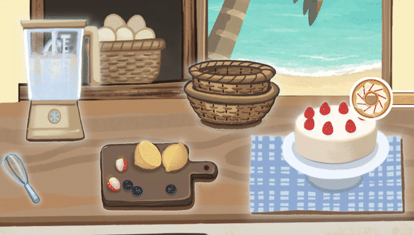
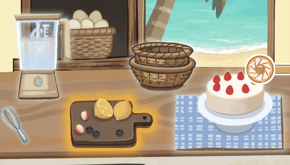
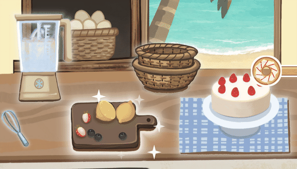
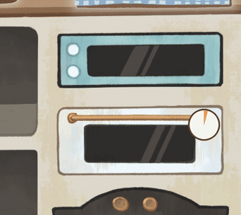

Food Truck Cafe
Your report for 17 and 18 November. 26.11.22 (build 35) and the 15 Stars purchase are in Apple's review, no message from Apple; they go on sale by themselves once approved.
1Next
You
Test build 37 is on TestFlight: the cookie shop and book, cookie buttons and start menu, the new blender, receipts, choux orders, cake frames, the iPad fixes. App icon unchanged.
Kitchen glows (Current): pick a "do this now" look.
Cookie buttons (Current): firm push, your three crunches by kind of action.
Players (Analysis): nobody has reached day 3; a tick to try it without the ad before day 3.
Apple (Q&A): no review message; the build email needs nothing now.
Me
Version numbers (your tick): from the next version on, the version is the day we submit and builds start at 1.
26.11.22 waits in Apple's queue since 15 November (Q&A).
ChatGPT, after 18 November 20:21: the cake retouch, only if you tick it.
2Q&A
The feedback from Apple (18 November)
Short answer: nothing to fix now.
- The only new message from Apple, by email at 9:53 this morning, is about test build 37: it uploaded fine. Apple adds that from April 2027 every upload must be built with Xcode 27. I will update Xcode before then.
- The 26.11.22 review: still "In Review", no message, nothing asked. "Sign-in required" is off, as it should be. The China notes on the page are the two questions answered under China below.
- If you saw a different message, tell me where (Mail or App Store Connect) and I will read it there.
Why is the App Store review taking so long this time? (18 November)
Short answer: it is waiting in Apple's queue. Nobody at Apple has opened it yet, and nothing is wrong with it.
- 26.11.22 and 15 Stars were sent together on 15 November, 15:00. Both still say "In Review". Apple has sent no message.
- Our player data shows every copy of 26.11.22 that has been played. There are only two: Apple's automatic checks, four minutes after sending. No reviewer has played it since. Last time a reviewer played within a day.
- The likely reason is 15 Stars. It is our first purchase that can be bought again and again, and Apple checks a first one of these by hand, which often takes longer.
- If nothing moves by Friday 20 November, you can ask Apple for a faster review (App Store Connect, Contact Us, "Request expedited review"). Only you can send it.
Can we release a version just for China that does not break its rules? (17 November)
Short answer: Apple allows one build per app for all countries, so not a separate build. But most of this needs no new build at all.
- The two "Missing Info" banners are only questions. Security Assessment asks whether the app has encrypted messaging or hands out AI-made content. AI Generated Content asks whether the app offers AI services (chatbots, picture or voice generation). Our game does neither, so both answers are No. I opened both forms and saved nothing; they are your declarations.
- The real rule is about purchases. Apple: a paid game, or a game with in-app purchases, needs a Chinese government approval number, which takes a Chinese business licence. Since Remove Ads and 15 Stars, Apple marks our China listing "missing game registration number".
- The way round, same build: each purchase has its own list of countries. Switch both purchases off for China mainland, and the game there is free with ads only. I would also hide the two buy buttons where the store offers nothing. I cannot promise Apple then clears its mark; Chinese law strictly wants approval for every game, Apple enforces it for paid ones.
- ICP filing number: Apple asks it of "some apps" and only offers a field for it. It also needs a Chinese entity. Nothing to do unless Apple asks.
China today: the game is on the store there, both purchases too. Deadline on the banners: 31 January 2027.
3Current
Cookie buttons: pushed down, then up, with a crunch, 18 November. In the project, in no build.

- Firm, no bounce: pressed, the cookie sinks a little (6 % of its height) and gets 5 % smaller at once. Released, it rises back to its place in about a fifth of a second and stops there.
- Your three crunches, by kind of action:
- 2, dry snap for going on: Continue, New, Ready, Play, Done, Collect, the tick, Next, Get 50 coins.
- 6, nibble for going back or saying no: the cross, Cancel, Home, Replay.
- 1, light bite for small controls: gear, pause, sound, music, the arrows, the map's day circles.
- The old press clicks are gone from these buttons, so each tap makes one sound.
Cookie style everywhere: buttons, stars, Daily Treats, map, 18 November. In test build 37. The app icon stays the painted truck (your tick).

- Every button (gear, pause, sound, music, home, replay, next, arrows, tick, cross, Continue, New, Collect, Ready, Done, Play, Cancel, Get 50 coins), the stars, the coin and gift (also inside the Daily Treats cards), the map's day circles, arrows and locks. Same sizes and places as before.
Your ticks and notes of today, done, 18 November. Going into test build 37.
Blender, slower (you said ship it): each flavour 1.1 s instead of 0.7, the ice and the blade turning slower. The brown at the bottom of the first clip was the wooden counter and the clip's colours, not the game.

Receipts: one place each side, mirror images about the middle, kept clear of the edges.
Choux order: one of the four new choux at random. Book: bread and coffee in it. Bugs folder: cleared.
Cake: your three fixes, 17 November, 20:50. In test build 37.

- 1, the layers: the cut faces are ChatGPT's original ones again (from the old frames), a little crisper.
- 2, frame 2: the pale patch with a hard edge on the plate is gone. All frames now share one plate picture, matched to the plate's own colour.
- 3, one slice: the shade at the slice's corner is gone. Each cut face has one small shade under it, and it leaves with its slice.
- ChatGPT is out of pictures until 18 November, 20:21. Your three fixes are worded and waiting in its chat; I did them here meanwhile.


Kitchen glows: one look for each state, 18 November. Drafts on the real kitchen, nothing in the game yet.
Your example: the sponge is out of the oven and fruit comes next. So the fruit board says do this now, and everything else only says you can tap.
1. You can tap. Today's cool white glow round the edge (the bags' and the blender's), breathing slowly, every 2 seconds.

2. Do this now. Three choices. Each has to beat the white glows at a glance.


3. Busy (my addition): no glow while an item works; a small timer fills on it, so players know to wait. Here the oven bakes.

Other states you may want:
- Ready: the oven or blender is done and something must be taken out. I would use "do this now" for it.
- Empty: coffee bags or scoops run out. "Do this now" only if an order is waiting for it; otherwise nothing.
- Not bought yet: no glow, as today.
- One rule: only one "do this now" at a time, or players don't know where to look.
The kitchen with everything bought, 15 November. Every food, all three ovens, the coffee machine and ice cream at their top level.

- The pull handle sits on the cake at its starting height; it can be dragged up or down.
4MVP
For the release after 26.11.22. Nothing here is in a build.
The three things for the next release (your pick):
- Redraw the choux. Done: the new plate with ChatGPT's four flavours is in test build 36, and you kept them over the repaint.
- Redesign the kitchen. Seven pieces are arrangeable in test build 36 (free on the table, snapped in the cabinets, red blocks the day). After it: the pieces back at their old places, whisk at the left edge.
- Improve the App Store page. Your ticks on the Q&A list choose which parts.
5Backlog
Nothing open.
6Analysis
Players, 14 to 18 November. Read 18 November, 16:50 UTC. Apple's reviewers and your phone left out.
| Day (UTC) | Downloads | Page views | New players | Tutorial done | Day 1 done | Day 2 done |
|---|---|---|---|---|---|---|
| 14 Nov | 15 | 271 | 9 | 5 | 2 | 1 |
| 15 Nov | 10 | 421 | 6 | 1 | 1 | 1 |
| 16 Nov | 14 | 234 | 13 | 8 | 7 | 2 |
| 17 Nov | 3 | 73 | 5 | 3 | 1 | 1 |
| 18 Nov* | – | – | 7 | 6 | 5 | 0 |
| Total | 42 | 999 | 40 | 23 | 16 | 5 |
* 18 November until 16:50 UTC. Apple has no numbers for it yet.
- Nobody has started day 3. Out of 40 new players, 5 finished day 2 and then stopped. One player (d1c449, Philippines) stayed 2.5 hours, watched 9 ads, and still stopped after day 2. On 15 November two players closed the game 10 to 20 seconds after day 2 ended, just when the second between-days ad plays.
- Tutorial: 23 of 40 finished it. Those who quit, quit at the oven steps (8 "Tap the oven to bake more bread", 9), as last week.
- Day 1: 16 of 20 who started it finished it.
- Store: the rush of 14 to 16 November is over. Apple showed the game 3,236 times on 15 November and 648 times on 17 November, so downloads fell from 10 to 15 a day to 3.
- Money: ads $0.30 for 11 to 17 November. No purchases (Remove Ads is on sale; 15 Stars waits on review).
My suggestion: no between-days ad before day 3 is finished, then see whether players reach day 3.
7Marketing
The App Store page, ratings, keywords, events, anything that brings players. Kept here until you decide.
App Store page: what we can improve (15 and 16 November). Open: tick what to do, whenever you are ready.
Today: name "Food Truck Cafe", subtitle "Bake, serve & grow your cafe", English only, 0 written reviews, 6 of 10 screenshots, one video. Apple ranks search by name, subtitle, keywords and category, and by downloads and ratings. The description does not count for search.
A. To be found more
- Ask happy players for a rating. Apple's own popup after a 3-star day, at most 3 times a year. A small code change; the biggest win.
- New subtitle and keywords. Ours miss ice cream, waffles, the beach, coffee. For example: subtitle "Cozy bakery & cooking tycoon"; keywords restaurant,kitchen,chef,coffee,barista,ice cream,dessert,cake,pastry,diner,cute,sweet,waffle,beach. Store text, so only with your words.
- UK and Australia English pages. More keyword fields. Common practice; Apple does not say how much it helps.
B. To look better once found
- A universal picture (new with iOS 27). One wide picture for the top of the page and for search results, and what Apple needs to feature a game in its big spots. We have none. Goes up without a new version, through Apple's review.
- Video. It ends on the night beach and jumps back to the forest; it opens on a customer waiting; the cover is the forest serve. Fix: open on a serve, loop smoothly, ice cream on the cover.
- Screenshots. Captions sit in three different places; the kitchen has empty ovens; the shop shows dark locked shapes; 4 slots are unused.
- Description and promotional text. Still says "serve two customers at a time"; no beach, ice cream, chapters or star shop. The promotional text can change at any time without review.
- iPhone Duo screenshots. They give a "made for iPhone Duo" badge and become required in April 2027. Our video already fills the Duo slot.

C. News slots
- An in-app event for the winter chapter in mid-December. Free; shows on the page, in search and on the Today tab. Needs a 16:9 and a 9:16 picture.
- A custom page for ice cream, tied to the keyword, with the beach pictures first.
Checked: our pictures follow Apple's rules (no prices, links or awards; fit for 4+). Later: Apple's A/B test of icon and pictures, once there are more visitors.
Sources: Apple's pages on search, the product page, asset best practices, custom pages.
8C chapter
The Christmas chapter. Your ideas, kept here as the plan grows.
Your ideas, 18 November.
- Colours: pink (the table cloth) and white (snow).
- Customers wear winter clothes.
- Food: cookies.
- Drinks: several hot drinks.
From your plan of 15 November: out by mid-December, behind the chapter switch until then.